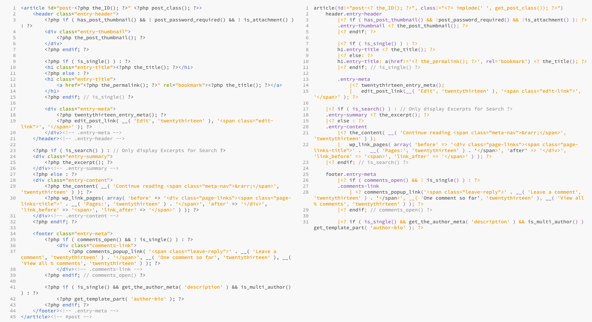
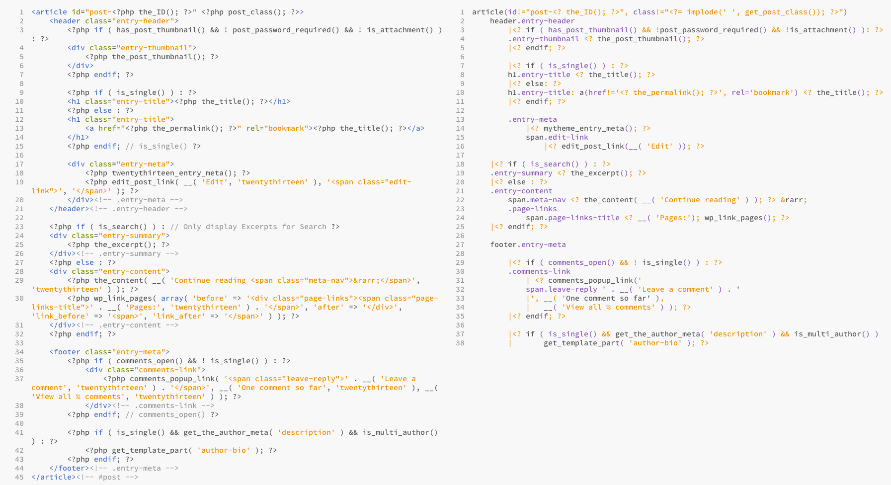
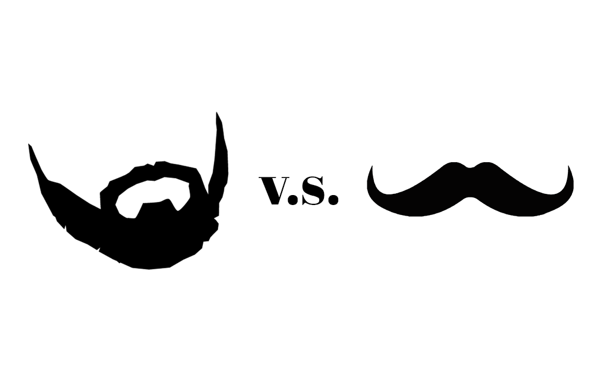
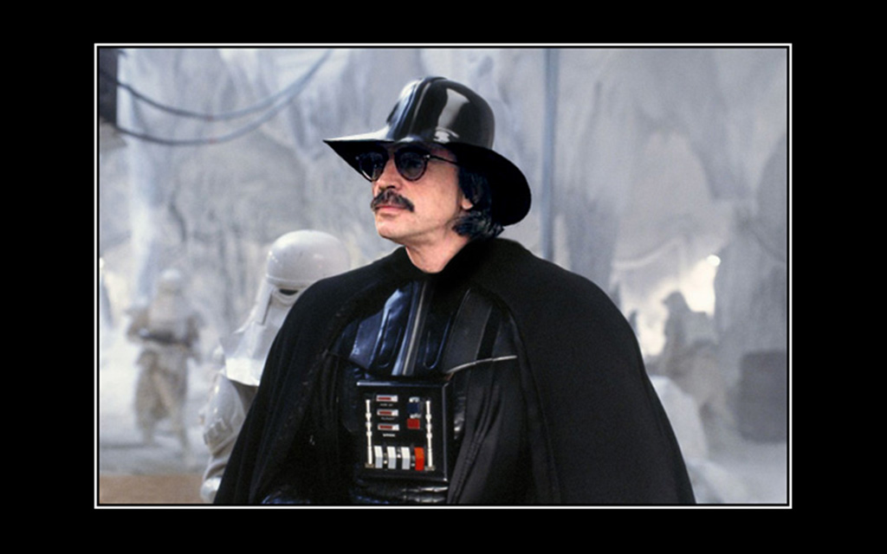

JavaScript код
ul
- for (var x = 0; x < 3; x++)
li= x<ul>
<li>0</li>
<li>1</li>
<li>2</li>
</ul>Примеси (Mixins)
mixin checkbox(label, name, value, checked)
input(
type="checkbox"
name=name
value=value
id=value
checked=checked)
label(for=value, class=checked ? 'checked' : '')= label+checkbox("Нажми меня", "checkme", "ok", false)Примеси (Mixins)
<input type="checkbox" name="checkme" value="ok" id="ok" />
<label for="ok">Нажми меня</label>
Включения (Includes)
index.jade
inc/
/header.jade
/footer.jadeindex.jade:
include inc/header
article
h1 Hello world!
include inc/footerРасширение (Extend)
index.jade
system/html.jade
html.jade
doctype html
html
head
include head
body
header
include header
main
block main
footer
include footerindex.jade
extend system/html
block main
article
h1 Hello world!Фильтры
:markdown
## Some header
* List item 1
* List item 2
* List item 3
script
:coffee
console.log 'This is coffee script'Установка Jade
Нужен установленный Node.js
$ npm install jade
$ npm install jade -g$ sudo npm install jade -gИспользование Jade
$ echo "h1 Hello world!" | jade
<h1>Hello world!</h1>$ jade < index.jade > index.html$ jade -w -P templates-w — watch
-P — pretty
Установка Grunt и Jade
Необходим Node.js
$ npm install grunt-cli -g
$ npm install grunt --save-dev
$ npm install grunt-contrib-jade --save-dev
Или расписать package.json и
$ npm install
Инструкция
Gruntfile.js
module.exports = function(grunt)
{ grunt.initConfig
({ jade:
{ compile:
{ files:
{ "index.html": "index.jade"
}
, options:
{ pretty: true
}
}
}
});
grunt.loadNpmTasks('grunt-contrib-jade');
grunt.registerTask('default', ['jade']);
};Gruntfile.js
files:
[{ expand: true
, cwd: "app/"
, src: "**/*.jade"
, dest: "site/"
, ext: ".php"
}]Grunt Watch
Gruntfile.js:
watch:
{ jade:
{ files: ["app/**/*.jade"]
, tasks: "jade"
}
, options:
{ livereload: true
}
}В шаблон
script(src="//localhost:35729/livereload.js")Установка Grunt Watch
$ npm install grunt-contrib-watch --save-dev
Gruntfile.js:
grunt.loadNpmTasks('grunt-contrib-watch');
grunt.registerTask('default', ['jade', 'watch']);Jade + PHP
PHP конечно гадит, но все равно лучше

Немного оптимизируем

Jade + PHP
h1 <?php echo $heading ?>
h1 <? echo $heading ?>
h1 <?= $heading ?>
<? if($heading): ?>
h1 <?= $heading ?>
<? endif ?>.htaccess: php_flag short_open_tag on
В атрибутах
a(href!="<?= $page->url() ?>") <?= $page->title() ?>
a(…, <? if ($active): ?>class="active"<? endif ?>)
<? if ($active) { $class = "active" } ?>
a(…, class!="<?= $class ?>") <?= $page->title() ?>В атрибутах
input(type="text" disabled)
input(type="text", <?php if($disabled): ?>disabled<? endif ?>)
<? if ($disabled): ?>
input(type="text", disabled)
<? else: ?>
input(type="text")
<? endif ?>
В несколько строк
.screen_items
|<? $cur = 'cur';
| foreach ($screens as $key => $screen):
| $src = $screen->url() || "blank.gif"; ?>
img(src!="<?= $src() ?>", class!="<?= $cur ?>")
|<? $cur = '';
| endforeach ?>В несколько строк
.screen_items.
<? $cur = 'cur';
foreach ($screens as $key => $screen):
$src = $screen->url() || "blank.gif"; ?>
<img src="<?= $src() ?>" class="<?= $cur ?>">
<? $cur = '';
endforeach ?>Jade не выносит смесь пробелов и табов
Includes
Включение файлов
h1 Hello world!
article
<?php include('article.php'); ?>
h1 Hello world!
article
include article // article.jadeА так?
<?php include('header.php'); ?> // <body>
article
h1 Hello world!
<?php include('footer.php'); ?> // </body>Just Extend!
Расширение (Extend)
index.jade
system/html.jade
html.jade
doctype html
html
head
include head
body
header
<?php include('header.php'); ?>
main
block main
footer
<?php include('footer.php'); ?>index.jade
extend system/html
block main
article
h1 Hello world!Статичные данные
- var labels = { pass: "Password" }
input(type="text", placeholder=labels.pass)
<input type="text" placeholder="Password" />Подключение JSON через Grunt
jade:
{ compile:
{ options:
{ pretty: true
, data: grunt.file.readJSON("data/data.json")
}
…
Подключение YAML через Grunt
jade:
{ compile:
{ options:
{ pretty: true
, data: grunt.file.readYAML("data/data.yaml")
}
…
Фреймворки

Настройка Grunt для MVC фреймворка
files: [{
expand: true,
cwd: "jade/",
src: "**/*.jade",
dest: "application/view/",
ext: ".php"
}]index.php
<?php get_header(); ?>
<div id="main-content" class="main-content">
…
</div><!-- #main-content -->
<?php
get_sidebar();
get_footer();function get_header ()
$templates = array();
$name = (string) $name;
if ( '' !== $name )
$templates[] = "header-{$name}.php";
$templates[] = 'header.php';
function get_footer ()
$templates = array();
$name = (string) $name;
if ( '' !== $name )
$templates[] = "footer-{$name}.php";
$templates[] = 'footer.php';
header.php
<!doctype html>
<html <?php language_attributes(); ?>>
…
<body <?php body_class(); ?>>
<div id="page" class="hfeed site">
…
<div id="main" class="site-main">
footer.php
</div><!-- #main -->
</div><!-- #page -->
…
</body>
</html>Базовый шаблон
doctype html
html
head
…
body
div#page.hfeed.site
block pageindex.php
extend ../system/html
block page
include ../templates/header
div#main.site-main
…
include ../templates/footerindex.php
extend ../system/html
block page
<?php include('header.php'); ?>
div#main.site-main
…
<?php include('footer.php'); ?>

Mustache.php
Mustache.php
article
h1 {{ title }}
.bodytext.
{{#start}}
This is ${{some_value}}.
{{/stop}}Mustache.php
<article>
<h1>{{ title }}</h1>
<div class="bodytext">
{{#start}}
This is ${{some_value}}.
{{/stop}}
</div>
</article>Blade
Blade
| @section('sidebar')
.sidebar This is the master sidebar.
| @show
article @yield('content')Blade
@section('sidebar')
<div class="sidebar">This is the master sidebar.</div>
@show
<article>@yield('content')</article>Twig
Twig
| {% for user in users %}
span.username {{ user.name }}
| {% else %}
| No user have been found.
| {% endfor %}Twig
{% for user in users %}
<span class="username">{{ user.name }}</span>
{% else %}
No user have been found.
{% endfor %}Smarty
Smarty
| {foreach $users as $user}
| {strip}
tr
td {$user.name}
td {$user.phone}
| {/strip}
| {/foreach}Smarty
{foreach $users as $user}
{strip}
<tr>
<td>{$user.name}</td>
<td>{$user.phone}</td>
</tr>
{/strip}
{/foreach}